Day 1: 21st March
Gothic Quarter, Gaudí & Sagrada Família
We touched down in Barcelona around 1 p.m., and within minutes, the city’s heartbeat was unmistakable—football. It wasn’t just a sport here; it was a language, a religion, a way of life. Kids dribbled balls down alleyways, adults wore jerseys like second skin, and conversations about the game flowed like poetry. For any football lover, it felt like coming home.
Getting our bearings took some time—as it does when you land in Europe and have to figure out the first bus on limited sleep and unfamiliar signs. We eventually made it to our apartment, which, in hindsight and now with several stays behind me, I’d call “decent.” The host won us over a bit with milk chocolate, though.
There was no time to rest. At 4 p.m., we had a GuruWalk booked—a free walking tour with a local guide. I was running on fumes, dragging my feet more than walking, but I’m so glad we went. Our guide led us through the Gothic Quarter, the oldest part of the city, where Barcelona was born. Before diving into the Gothic alleys and Gaudí wonders, we made a quick stop at one of Barcelona’s most heartwarming hidden gems—the Kissing Wall (El Muro del Beso). At first glance, it looks like a romantic mosaic of two people kissing. But step closer, and you’ll see it’s made up of thousands of tiny photos, each capturing moments of freedom, love, and everyday life.
Created by artist Joan Fontcuberta, the mural is titled “The World Begins With Every Kiss”, and it’s a powerful reminder that even in a bustling city, intimacy and connection matter. It was the perfect way to start our journey—art, emotion, and a little surprise tucked into a quiet corner of the city.
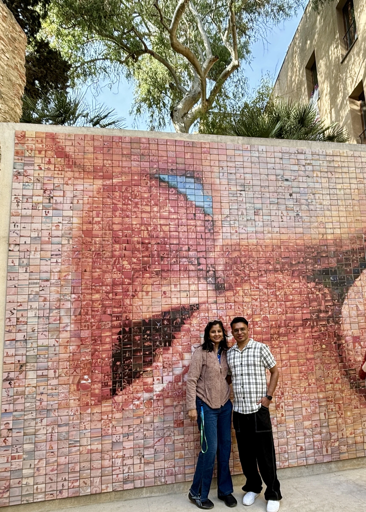
We wandered past ancient Roman walls, stood in the shadow of the Cathedral of Barcelona, and paused at Plaça del Rei, where royalty once ruled. The highlight? The Bishop’s Bridge, a fairytale-like archway that looks like it was plucked straight from a fantasy novel. It was designed by Joan Rubió i Bellver, a disciple of Antoni Gaudí, to complement the Gothic Quarter’s historic vibe. Rubió was frustrated when his grand plan to transform the entire area into a Neo-Gothic wonderland was rejected. In protest, he allegedly carved a skull pierced by a dagger under the bridge—meant to curse anyone who walks beneath it. Some even whisper that the skull might be real! The bridge’s design was inspired by the Bridge of Sighs in Venice, giving it a romantic and dramatic flair that makes it one of the most photographed spots in the city. It was also featured in the “Zindagi Na Milegi Dobara” movie.
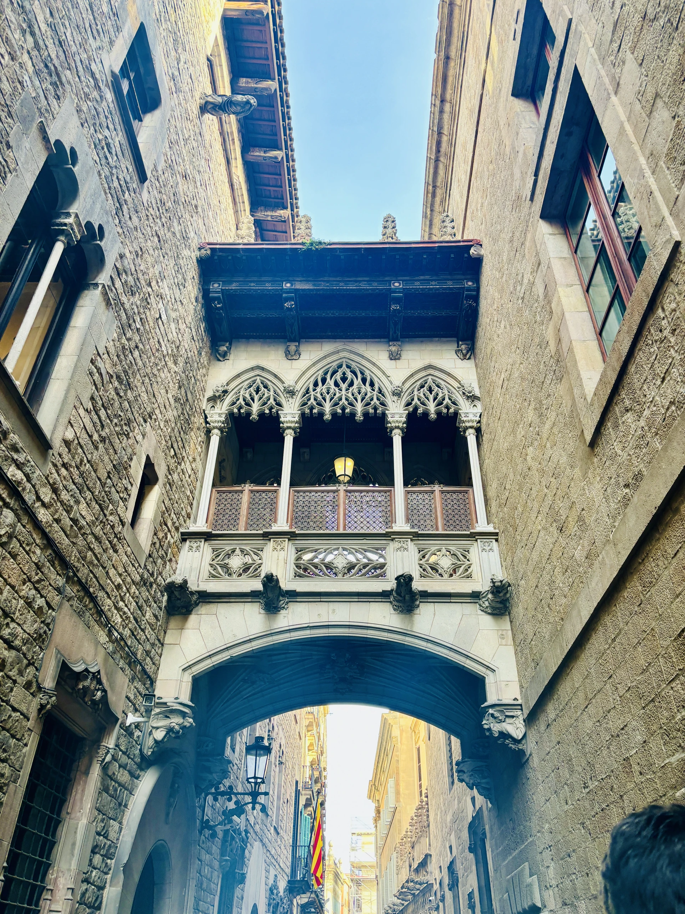

Just when we thought we were getting a grip on the city’s ancient charm, we stumbled upon something… unexpected. Tucked into a souvenir shop window was a tiny figurine of a man squatting with his pants down. Meet the Caganer—a traditional Catalan Christmas figure that’s been raising eyebrows (and chuckles) for centuries.
Yes, you read that right. The Caganer, which literally means “the pooper,” is a beloved part of Catalan nativity scenes. It might sound bizarre, but locals see it as a symbol of fertility, humility, and the natural cycle of life. It’s quirky, unapologetically human, and somehow, it fits perfectly into Barcelona’s blend of tradition and rebellion.
Only in Barcelona can you go from Gothic cathedrals to cheeky figurines in the span of a few blocks.
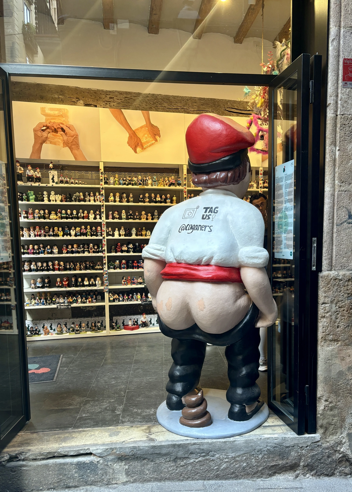
Just a few steps away, in Plaça de Sant Miquel, we came across something that stopped us in our tracks—a towering sculpture made entirely of wire, frozen in a moment of breathtaking balance. This was the Monument als Castellers, a tribute to one of Catalonia’s most awe-inspiring traditions: human towers, or castells.
The sculpture captures the essence of this centuries-old practice, where teams of people—called colles—form multi-tiered towers by climbing on each other’s shoulders. It’s not just a feat of strength and coordination, but a symbol of community, trust, and Catalan pride.
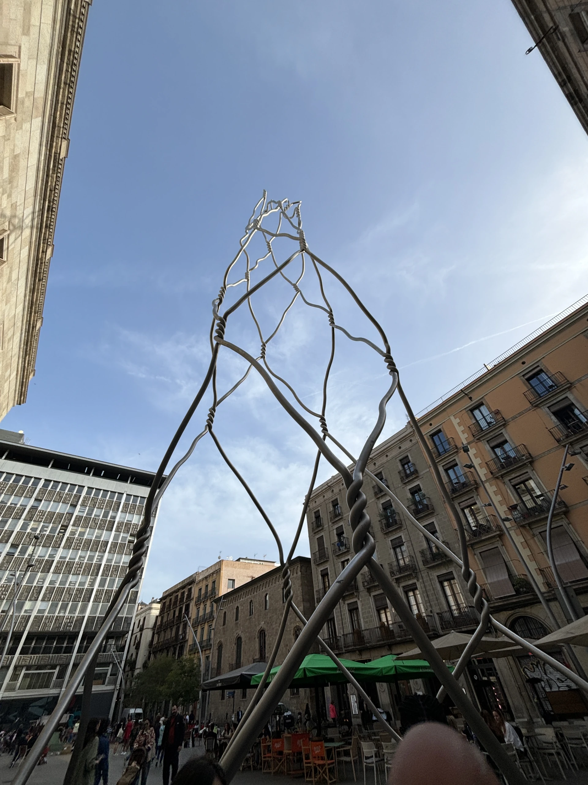
As we admired the wire sculpture of the Castellers, something clicked—it reminded me of Dahi Handi back home in India. Both traditions involve forming human pyramids, both require immense coordination and trust, and both are deeply rooted in cultural pride. Different continents, different stories—but the same spirit of community, courage, and celebration.
Reflections on the roadAs we wandered further, we came across a street performer who had completely mastered the art of illusion. He stood frozen, mimicking the effect of a powerful gust of wind—his clothes billowing, his posture tilted, as if nature had paused mid-chaos. I have no idea how he pulled it off, but it was absolutely mesmerizing.
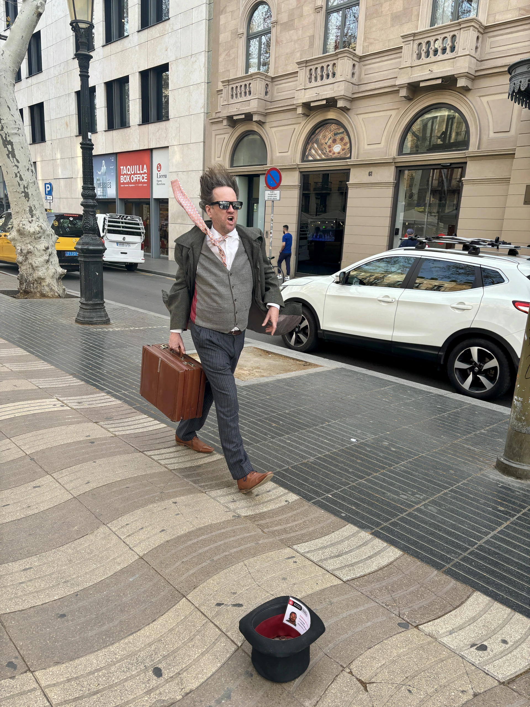
It’s moments like these that make Barcelona feel alive. The city isn’t just about grand architecture and deep history—it’s about the unexpected magic that happens on its sidewalks. Whether it’s a human statue defying gravity or a musician playing flamenco in a quiet alley, Barcelona performs for you, even when you’re not looking for a show.
As the sun dipped lower, casting golden light across the city, we found ourselves face-to-face with some of Barcelona’s most iconic architectural marvels—each one a masterpiece, each one a story carved in stone.
First up was Casa Amatller, a lesser-known gem with a façade that looks like it belongs in a chocolate box (fitting, since it was built for a chocolatier!). Right next to it stood the surreal and dreamlike Casa Batlló, designed by the legendary Antoni Gaudí. With its wavy lines, mosaic tiles, and dragon-like rooftop, it felt like stepping into a fantasy world.
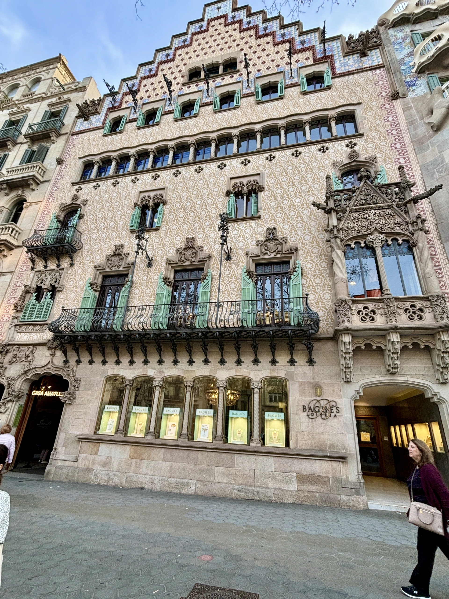
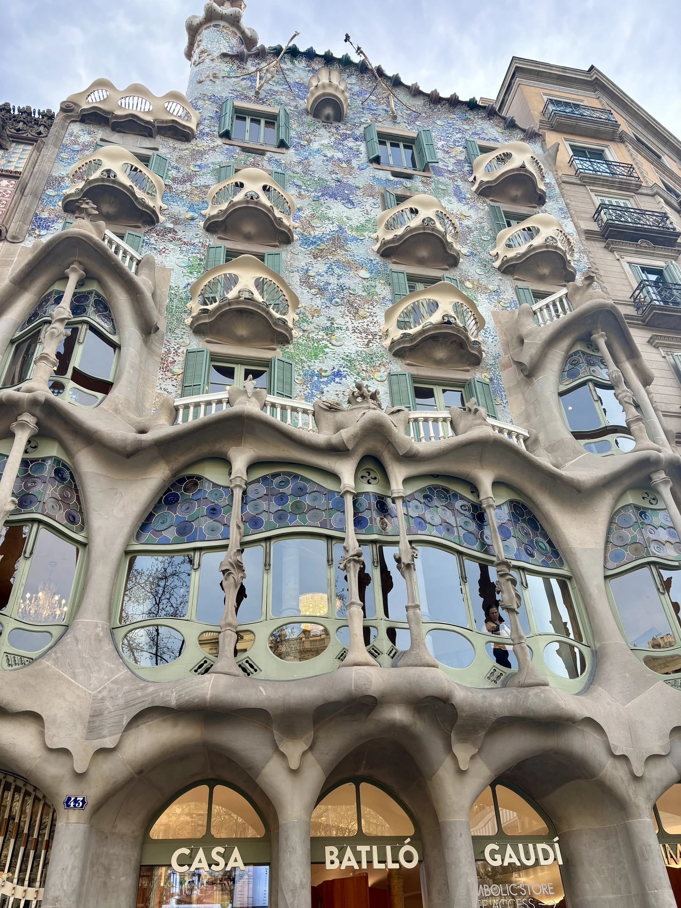
And just when we thought we’d seen it all, we reached Casa Milà (La Pedrera)—a bold, undulating stone structure that looks like it was sculpted by wind and water rather than human hands. No straight lines, no sharp corners—just pure, flowing creativity.
Barcelona doesn’t just build buildings—it tells stories through architecture. Every balcony, every curve, every tile has a purpose. And walking past these masterpieces, you can’t help but feel like you’re inside an open-air museum curated by genius.
As our guided tour came to an end, we decided to explore on our own, letting the city lead us wherever it pleased. On the way back to our apartment, the irresistible scent of fried dough pulled us into a tiny churro shop. And honestly—when in Spain, fry it up and sugar it down, right? Crispy, golden, and dipped in thick chocolate, it was the perfect pick-me-up after a long day of walking.
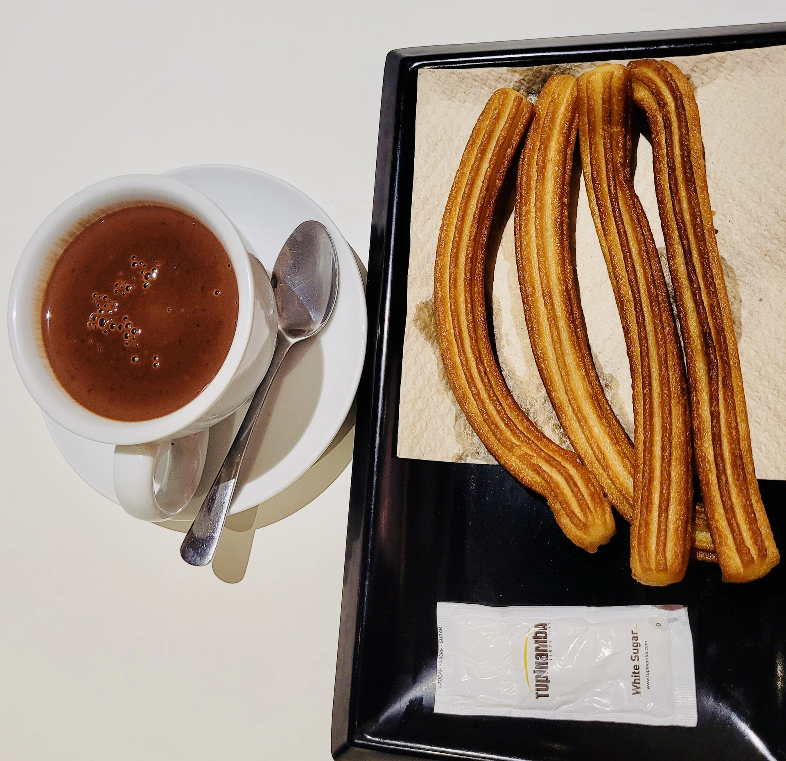
Our apartment was just a short stroll from the majestic Sagrada Família, so we wandered over to see it bathed in the golden hour glow. Even from the outside, the basilica is breathtaking—its spires reaching skyward like a stone forest, each detail more intricate than the last. We snapped a few photos, stood in awe for a while, and let the moment sink in.
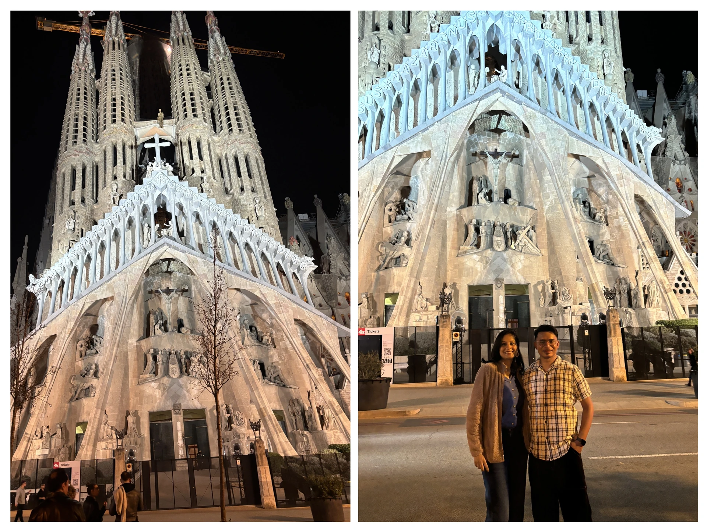
Though our day in Barcelona came to a close, the city still holds a few secrets we’ve yet to uncover. Luckily, we’ll be back—our flight to Rome departs from here, giving us one more chance to soak in the magic.
That was more or less it for Day 1. Since we landed midday and started exploring by 4, it felt like a sprint in slow motion. Back at the apartment, we began the dance of backpack repacking—a first for us, ditching the wheels for straps. It’s chaotic, this life out of zippers and cubes, but we’re still figuring it out. Still hustling through it.
Sleep came fast. Our alarms were set for a 6 a.m. train to Madrid the next day—and we needed every bit of shut-eye.
Until then, adiós, nos vemos.
Day 2: 2nd April
A Chilled Farewell to Spain
Date: 2nd April 2024
Our time in Spain was coming to an end, and we had an early morning train from Madrid to Barcelona. Since we had our first internal flight from Barcelona to Rome the next day, we chose a hostel near the airport. It was a bit far from the city center, but the owner assured us there was an early morning bus right outside that would take us directly to the airport—perfect for our early flight.
After checking in, we got ready for our last day in Spain—bittersweet, but we were determined to make the most of it. First stop: Indian brunch. There’s something incredibly comforting about familiar spices when you’re far from home.
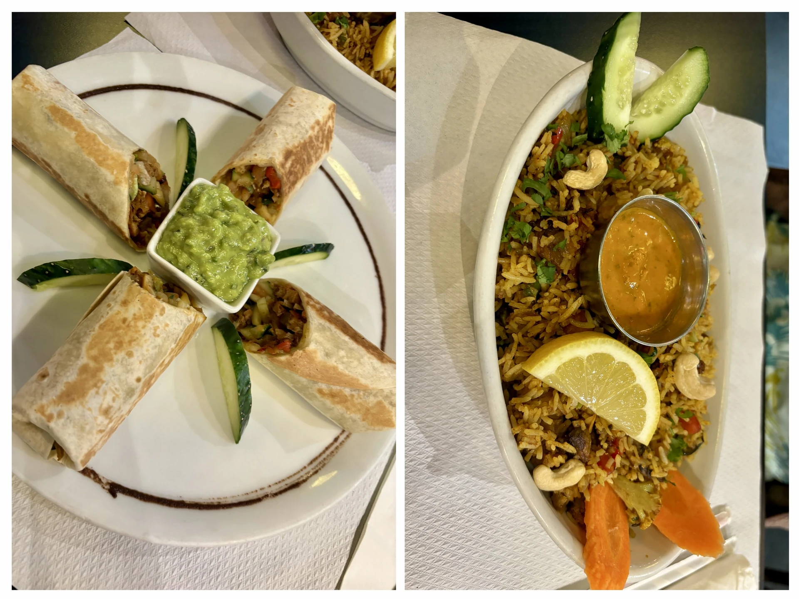
Next, we made our way to the official FC Barcelona store—a pilgrimage for any football fan. But wow, talk about premium pricing! Jerseys, scarves, mugs… and then we saw it: a patch of stadium grass for €50. Yes, actual grass. For fifty euros. We laughed, we gasped, we walked away.
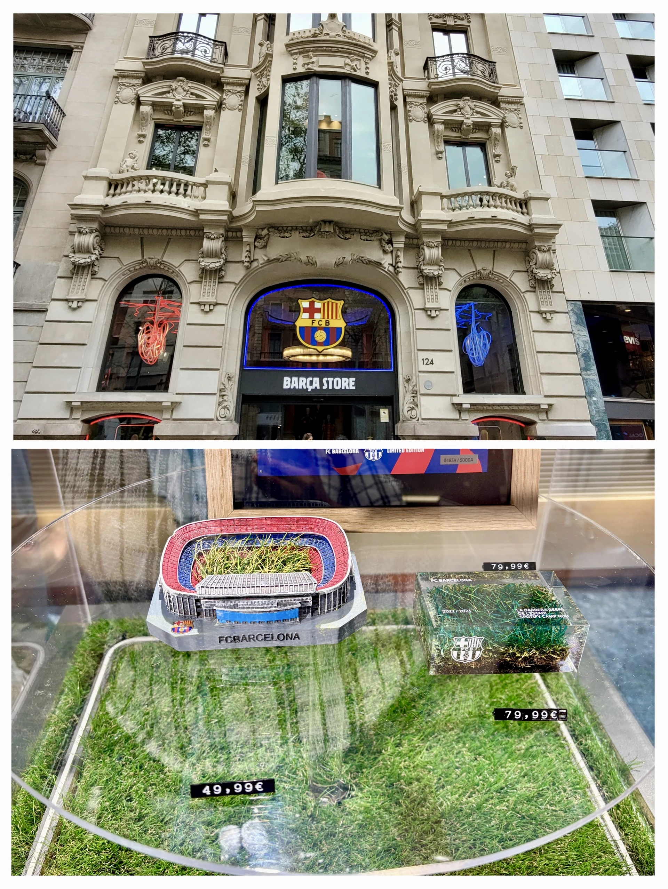
From there, we headed to La Boqueria, Barcelona’s most famous market. A sensory overload in the best way—fresh fruits, jamón, seafood, juices, and sweets all under one colorful roof. It’s the kind of place where you go in for a snack and come out with a full stomach and a camera roll full of photos.
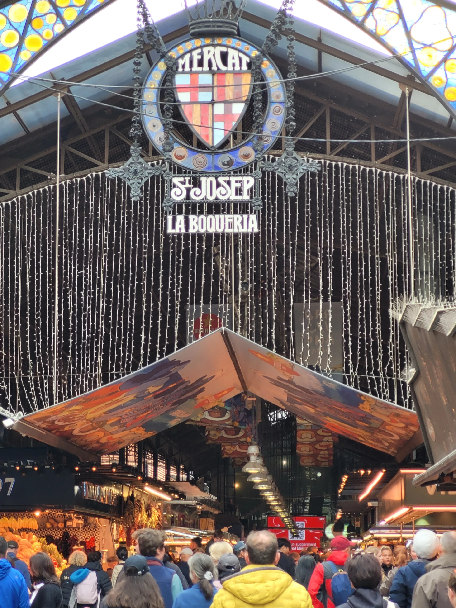
To wind down, we walked toward the beach, letting the sea breeze and sound of waves wash over us. As we neared the beach, we stumbled upon the towering Columbus Monument, where Christopher Columbus points dramatically toward the sea—though fun fact, he’s actually pointing away from the Americas! It’s one of those iconic landmarks that makes you pause, snap a photo, and wonder about the stories behind it.
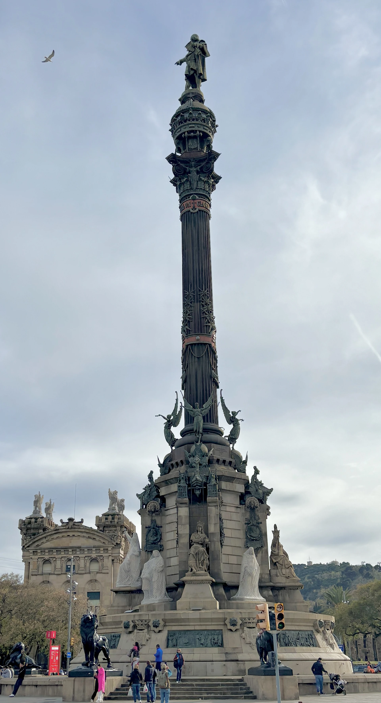
We spent some peaceful time at the beach, soaking in the sun, clicking photos, and letting the Mediterranean breeze carry away the fatigue of travel. It was the perfect blend of relaxation and reflection.
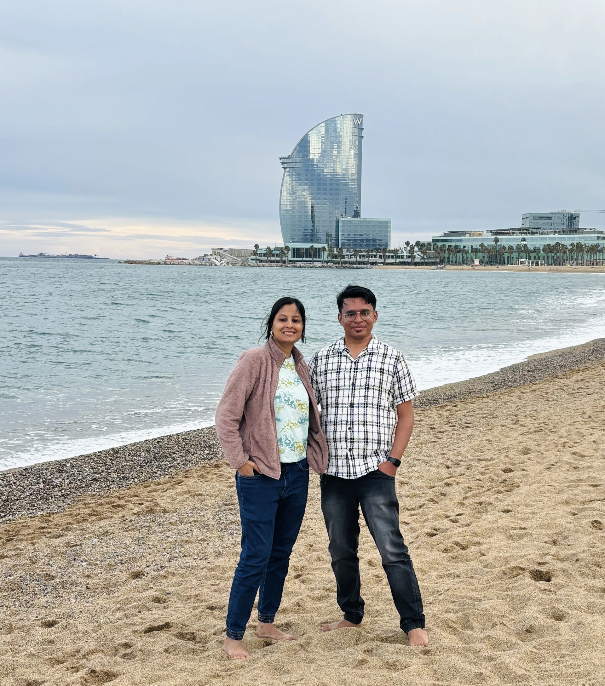
From there, we explored the nearby areas and made our way to Plaça de Espanya, one of Barcelona’s grandest squares. There, we saw the Arenas de Barcelona, a former bullring that’s now a stylish shopping center. The transformation from tradition to modernity is striking—and very Barcelona.
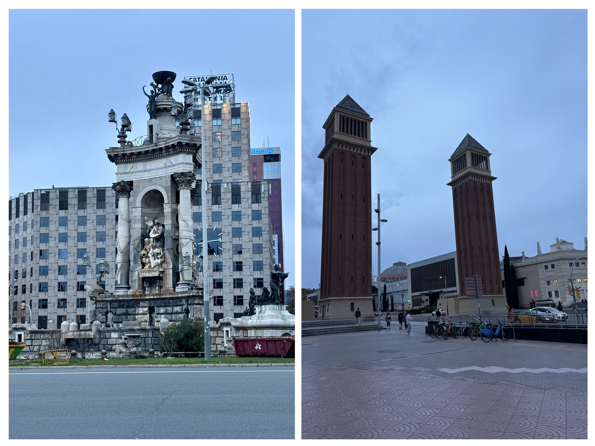
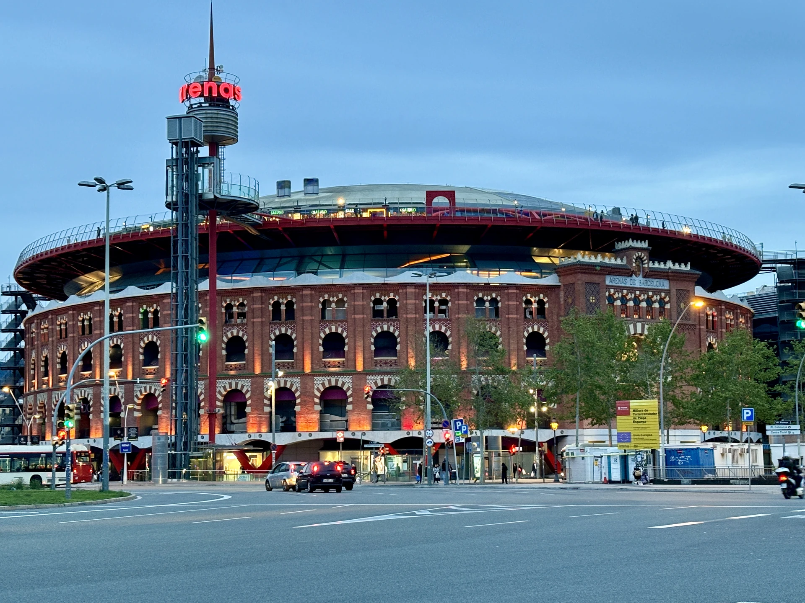
Our final stop was Poble Espanyol, an open-air architectural museum that showcases replicas of buildings from different regions of Spain. It’s like walking through a mini-Spain in one afternoon—Andalusian courtyards, Galician houses, Castilian plazas—all in one place. A beautiful way to wrap up our journey through Spanish culture.
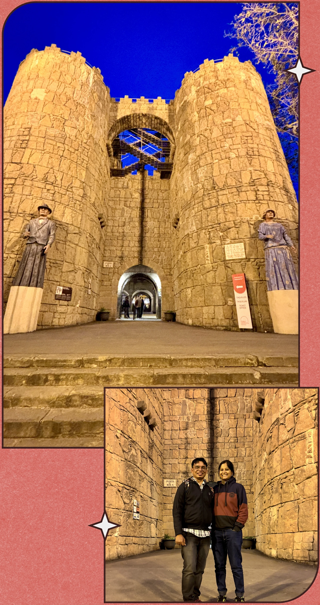
For dinner, we found a cozy vegan café with unlimited soft drinks—a fun little bonus. It was a chilled-out evening, the kind that lets you slow down and savor the moment.
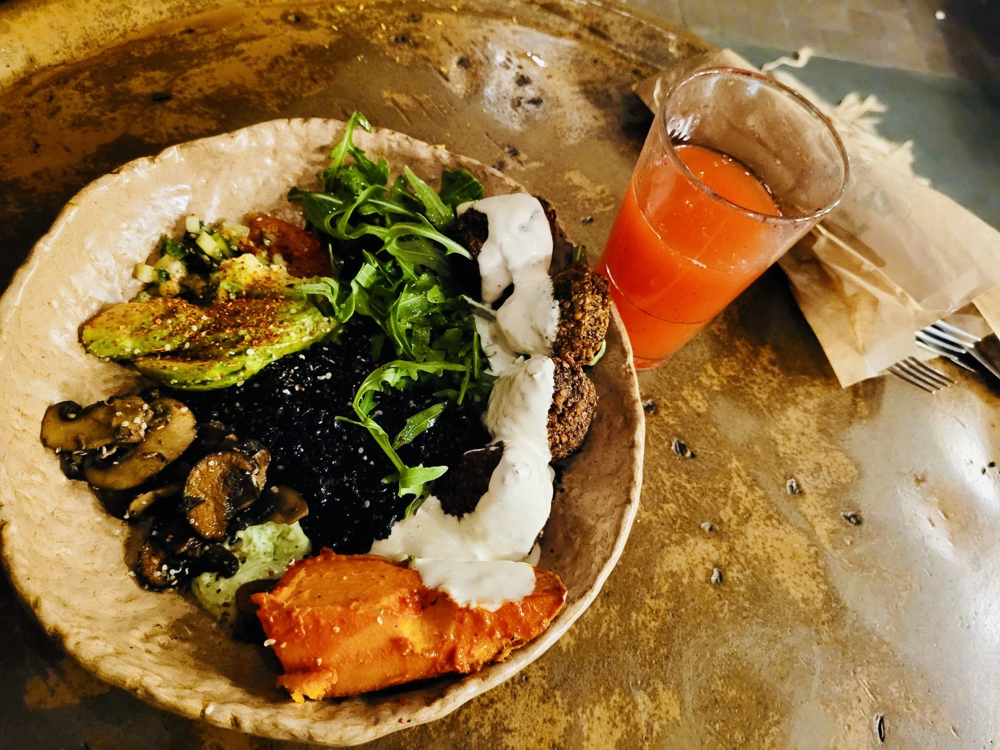
Back at the hostel, we packed our bags for Italy, feeling a mix of excitement and nostalgia. Spain had given us so much—history, food, culture, and memories we’d carry forever.
Must-Visit Places in BARCELONA
If you ever find yourself in Barcelona, here are some incredible spots to explore:
- Sagrada Família: Gaudi's iconic spires.
- Park Güell: Vibrant colorful mosaics.
- Gothic Quarter: Historic medieval streets.
- Casa Batlló: Whimsical dragon rooftop.
- La Rambla: Stroll down the lively avenue.
- Montjuïc Hill: Magnificent panoramic vistas.
- Camp Nou: FC Barcelona's legendary home.
- Picasso Museum: Picasso's early artistic works.
Join the conversation
Have a question, a tip, or a memory from the same place? Drop a comment below — no signup needed.